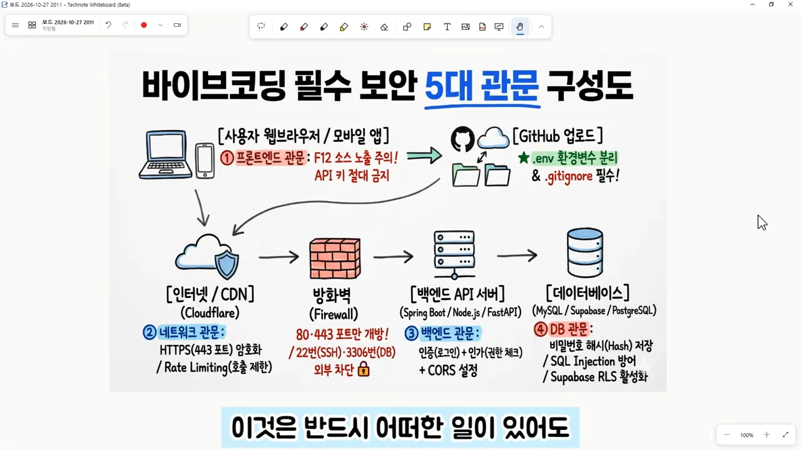
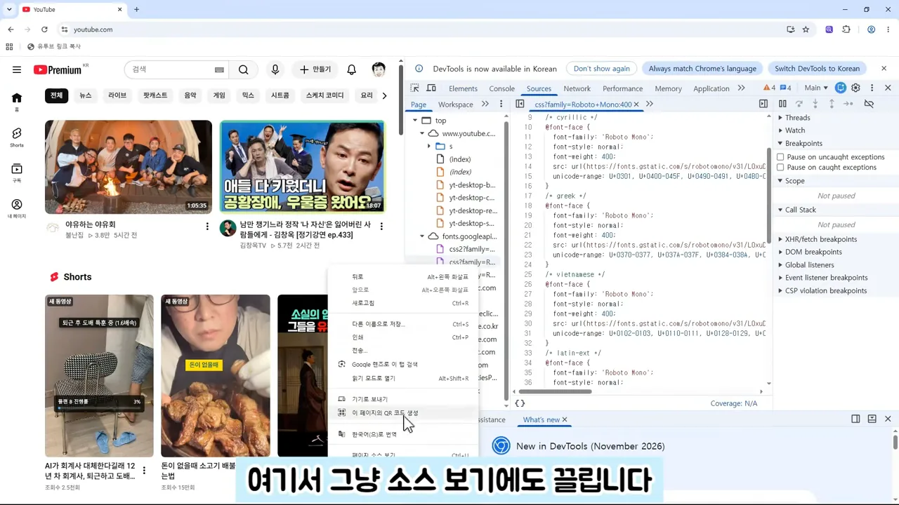
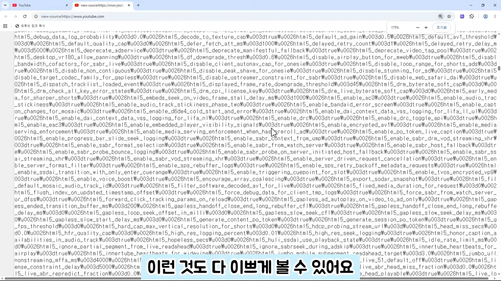
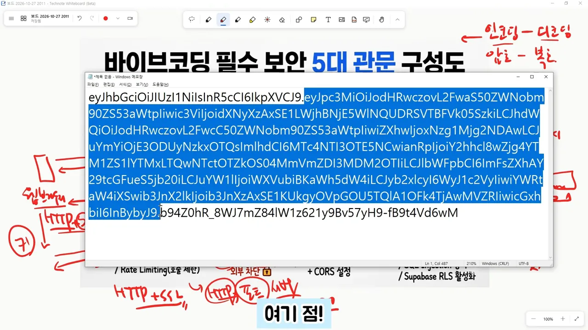
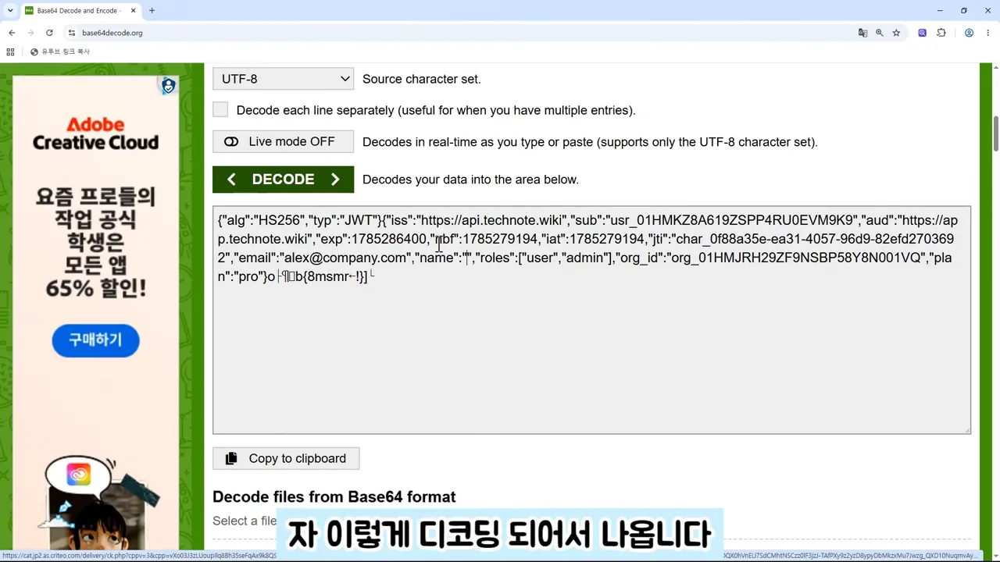
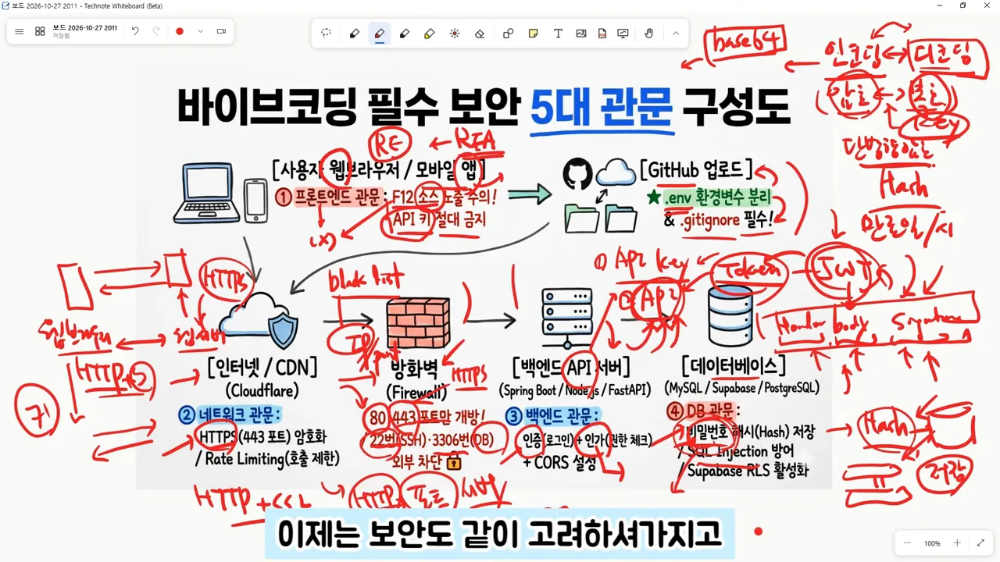

다섯 관문, 그리고 프론트엔드 소스
영상은 처음부터 끝까지 한 장짜리 구성도 위에 손글씨를 덧그리며 진행해요. 위쪽 줄은 사용자 브라우저·모바일 앱과 GitHub 업로드, 아래쪽 줄은 인터넷/CDN → 방화벽 → 백엔드 API 서버 → 데이터베이스예요. 빨간 동그라미 번호 ①~④가 관문이고, 방화벽의 '80·443 포트만 개방'까지 합쳐 다섯 관문이에요.

프론트엔드 소스는 누구나 볼 수 있어요
첫 관문은 사용자 쪽이에요. 영상은 YouTube 화면에서 F12를 눌러 개발자 도구를 열어 보여요. 오른쪽 패널에 페이지를 이루는 파일과 코드가 그대로 펼쳐져요.

'페이지 소스 보기'를 해도 마찬가지예요. 아래 화면처럼 글자가 빽빽하게 이어져 읽기 어려운 건 난독화 때문이에요. 하지만 요즘은 이것도 AI에게 맡기면 보기 좋게 풀어 준다는 게 영상의 설명이에요.

모바일 앱도 다르지 않아요. 자바로 만든 앱은 디컴파일이 돼서, 배포한 앱이 다시 소스 코드로 돌아와요. 그 안에 비밀번호나 API 키가 있으면 그대로 드러나요. 그래서 영상은 API 키를 프론트엔드 소스에 절대 두지 말라고 강조해요.
.env로 빼고 .gitignore로 막아요
소스는 결국 GitHub에도 올라가요. 저장소를 private으로 설정해도 GitHub는 인터넷 공간이라 안심할 수 없다는 게 영상의 생각이에요. 그래서 비밀 값은 .env 같은 환경 변수 파일에 따로 두고, 이 파일을 .gitignore에 적어 GitHub에 올리지 않아요. 구성도 오른쪽 위 초록 메모가 바로 이 내용이에요. 무심코 폴더째 올려 버리는 실수가 잦으니 한 번 더 확인하라고 해요.
HTTPS와 인증서
두 번째 관문은 네트워크예요. 영상은 HTTPS를 'HTTP에 SSL을 더한 것', 즉 암호화가 들어간 HTTP(HyperText Transfer Protocol)라고 설명해요. 브라우저와 웹 서버 사이에서 일어나는 일을 두 단계로 나눠 보면 이래요.
sequenceDiagram participant B as 브라우저 participant S as 웹 서버 (인증서 설치됨) Note over B,S: 1단계 - 처음 연결할 때 S->>B: 인증서 전달 B->>B: 인증받은 인증서인지 확인 Note over B,S: 신뢰가 맺어짐 Note over B,S: 2단계 - 그 뒤 통신 B->>S: 비밀 키로 암호화한 데이터 S->>B: 비밀 키로 암호화한 데이터
그래서 서버에는 반드시 인증서가 설치돼 있어야 해요. 요즘 브라우저는 HTTPS 접속을 기본으로 하고, HTTP로 들어가려 하면 '그래도 접속할래?' 하는 경고를 띄워요. 무시하고 들어갈 수는 있지만 위험하니 그러지 말라는 거예요. 우리가 만든 서버도 마찬가지로 HTTPS를 적용해야 해요.
배포 서비스를 쓰면 인증서 설치는 대부분 자동으로 해 줘요. 그래도 인증서가 무엇을 하는지는 알아 둬야 문제가 생겼을 때 대응할 수 있다는 게 영상의 당부예요.
방화벽과 포트
방화벽은 이름 그대로 불을 막는 벽이에요. 영상이 거듭 말하는 기본값은 '처음엔 전부 막고, 필요한 곳만 뚫어 준다'예요. 무엇을 여는지는 포트 번호로 정해요. 포트는 서버 프로그램이 요청을 기다리는 번지 같은 거예요.
그림의 숫자는 영상이 짚은 포트예요. 80은 HTTP 웹 서버, 443은 HTTPS, 22는 SSH(Secure Shell)예요. WAS(Web Application Server)는 흔히 8080을 쓴다는 말도 곁들여요. 구성도 메모는 80·443만 열라고 하지만, 말로는 22번 정도는 열어 둔다고 설명해요. 물론 22번을 안 쓸 수도 있어요.
화이트리스트와 블랙리스트
방화벽은 IP(Internet Protocol)와 포트를 막아요. 그런데 IP를 몽땅 막으면 아무도 접속하지 못하죠. 그래서 두 방식을 같이 써요.
| 방식 | 무엇을 하나요 | 영상의 예 |
|---|---|---|
| 화이트리스트 | 좋은 것, 필요한 것만 받아요 | 방화벽이 정해진 포트만 여는 방식 |
| 블랙리스트 | 나쁜 짓을 한 쪽만 막아요 | DoS 공격을 하려는 IP, 해킹을 시도한 IP 차단 |
영상은 둘 다 할 수 있고, 해야 한다고 말해요.
기본값 그대로가 가장 위험해요
80·443·22처럼 누구나 아는 포트를 웰노운 포트라고 해요. 이런 포트도 번호를 바꿔 쓰는 경우가 있어요. 특히 DB(Database)가 위험해요. MySQL 기본 포트인 3306을 그대로 두면, 그 포트로 아이디와 비밀번호를 바꿔 가며 끝없이 시도할 수 있어요. 예전에도 프로그램으로 하던 일이지만, AI 덕분에 훨씬 쉬워졌어요.
영상은 해킹이 많았던 이유를 이렇게 정리해요. 대단한 기술로 뚫은 게 아니라, 기본 관리자 계정과 기본 포트와 기본 비밀번호를 그대로 썼기 때문이라는 거예요.
그냥 자물쇠 샀는데 1111로 되어 있던 그런 정도 수준으로 열려 있으면 뚫릴 수도 있다라는 거예요.
— 영상 07:00
마음먹고 덤비면 막아도 뚫릴 수 있어요. 그래도 도어락 없이 살 수는 없다는 게 영상의 결론이에요.
백엔드 API를 지키는 JWT 토큰
세 번째 관문은 백엔드 API예요. 영상은 'API 키'라는 말에 두 가지 뜻이 있다고 짚어요. 하나는 외부 API 서비스를 쓸 때 받은 키를 잘 보관하라는 뜻이에요. 다른 하나는 우리가 직접 만든 API를 지키는 일이에요.
바이브 코딩을 하다 보면 Claude, Codex, Antigravity 같은 도구가 백엔드까지 알아서 만들어 줘요. 프론트엔드는 그 백엔드 API를 호출해서 쓰고요. 도구가 기본적인 토큰 인증은 넣어 주겠지만, 정말 그렇게 됐는지 한 번 확인해 봐야 한다는 게 영상의 요점이에요.
JWT는 세 칸짜리 문자열이에요
이때 쓰는 토큰이 JWT예요. 영상은 구성도 옆에 헤더, 바디, 시그니처 세 부분을 적어 가며 설명해요. 정보를 담는 칸과, 이 토큰이 정상인지 맞춰 보는 칸이 한 문자열에 같이 들어 있어요.
흐름은 단순해요. 로그인하면 서버가 이 긴 문자열 하나를 만들어 줘요. 그리고 '다음부터 우리 서버에 들어올 거면 이 토큰을 가져와'라고 해요. 그래서 API를 호출할 때마다 토큰을 헤더에 넣어야 해요. 영상은 이 정도만 이해해도 충분하다고 해요.
토큰에는 만료 시간을 둬요
토큰 안에는 만료 시각도 들어 있어요. 정확한 토큰이어도 그 시각이 지나면 서버가 받아 주지 않아요. 토큰이 어딘가로 새면 그걸로 다른 시도를 할 수 있다고 보기 때문이에요.
flowchart LR
A["로그인 (아이디·비밀번호)"] --> B["토큰 발급"]
B --> C["API 호출마다 헤더에 토큰"]
C --> D{"만료 시각 지났나요?"}
D -- "아니요" --> C
D -- "예" --> E["거부하고 다시 인증"]
E --> B
만료되면 갱신 과정을 거쳐 새 토큰을 받아요. 이때 아이디와 비밀번호를 다시 넣게 되죠. 오랜만에 앱을 열었을 때 다시 로그인하라고 나오는 게 이 때문이에요.
인코딩, 암호화, 해시는 뭐가 다를까요?
네 번째 관문은 데이터베이스예요. 계정 정보와 개인 정보, 그중에서도 비밀번호는 절대 새면 안 돼요. 그래서 비밀번호는 DB에 그대로 저장하지 않고 해시로 저장해요. 영상은 여기서 헷갈리기 쉬운 세 가지를 나눠 설명해요. 구성도 오른쪽 위에 '인코딩–디코딩, 암호–복호, 단방향 암호'라고 적어 둔 부분이에요.
| 구분 | 되돌릴 수 있나요 | 무엇이 필요하나요 | 영상의 예 |
|---|---|---|---|
| 인코딩 → 디코딩 | 누구나 바로 되돌려요 | 필요 없어요 | JWT 문자열 |
| 암호화 → 복호화 | 키가 있으면 풀려요 | 키 (같은 키면 대칭 키) | HTTPS 통신 데이터 |
| 해시 (단방향 암호) | 풀 수 없어요 | — | DB에 저장하는 비밀번호 |
인코딩은 형태만 바꾼 거라 값만 있으면 누구나 풀어요. 암호화는 키가 있어야 풀 수 있어요. 앞에서 본 HTTPS가 양쪽이 같은 비밀 키를 나눠 갖고 데이터를 주고받는 대칭 키 방식이에요. 해시는 정보를 일부 손실시켜 버려서, 누가 와도 원래 값으로 되돌릴 수 없어요.
풀 수 없는데 어떻게 로그인을 확인하나요
영상은 이 질문에 이렇게 답해요. 가입할 때 비밀번호를 해시해서 저장해 둬요. 로그인할 때 들어온 비밀번호를 같은 방식으로 해시하면 똑같은 문자열이 나와요. 이 둘을 비교하면 돼요.
JWT를 열어 보면: 인증과 인가
영상은 실제 JWT 값 하나를 메모장에 띄워 보여 줘요. 언뜻 보면 알아볼 수 없는 긴 문자열이에요. 그런데 점(.)이 두 개 있어요. 아래 화면에서 파랗게 선택된 부분이 두 점 사이, 즉 실제 값이 담긴 가운데 칸이에요. 첫 점 앞은 헤더, 마지막 점 뒤의 짧은 꼬리가 시그니처예요.

서버는 시그니처를 맞춰 보고 정상적인 API 호출인지 금방 알아채요. 시간이 지났거나 비정상적인 호출이면 에러를 돌려줘요.
디코딩은 누구나 할 수 있어요
이번엔 같은 문자열을 Base64 디코딩 사이트에 붙여 넣어요. 따로 키를 넣지 않았는데도 내용이 바로 나와요. 아래 화면 회색 칸 맨 앞의 "alg":"HS256","typ":"JWT"가 헤더예요. 이어서 발급처 URL(iss), 사용자 ID(sub), 만료 시각(exp), 이메일, 역할 ["user","admin"], 요금제 "pro"가 보여요. 맨 끝의 깨진 글자는 시그니처 부분이에요.

나온 형식이 JSON(JavaScript Object Notation)이라서 JSON Web Token이라고 불러요. 주고받을 때는 헷갈리게 생겼지만, 값만 손에 넣으면 누구나 꺼내 볼 수 있어요. 앞 섹션 표에서 JWT가 '인코딩' 칸에 있는 이유예요.
인증과 인가
JWT로는 권한 관리도 해요. 영상은 두 개념을 놀이공원에 빗대 설명해요.
| 구분 | 무엇을 확인하나요 | 놀이공원이라면 |
|---|---|---|
| 인증 (authentication) | 아이디·비밀번호로 로그인했는지. '당신은 들어올 수 있어요' | 입장권 |
| 인가 | 어디까지 들어갈 수 있는지. '여기부터는 못 들어와요' | 관리자만 드나드는 문 |
실제 서비스에서는 유료 기능이 대표적인 인가 대상이에요. 위 디코딩 화면의 roles와 plan 같은 값이 그 판단에 쓰일 수 있는 정보예요. 영상은 JWT 하나로 인증도 하고 인가도 한다고 정리해요.
SQL 인젝션과 AI에게 구체적으로 시키기
DB 관문의 마지막은 SQL 인젝션이에요. 영상은 이게 가장 흔한 공격이라고 해요. 그래서 정적 분석 도구를 한 번은 꼭 돌려 보라고 권해요.
Claude에게 맡겨도 잘 처리해 줄 수 있어요. 문제는 요청하는 방식이에요. '웹사이트 하나 만들어 줘'라고 하면 근사한 사이트가 나오긴 해요. 하지만 딱 원하는 걸 만들어 주진 않아요. '보안 잘 처리해 줘'도 똑같아요. '잘'이 무엇인지 사람이 구체적으로 말해야 AI도 구체적이고 정확하게 처리해요.
아래는 영상이 끝날 무렵의 구성도예요. 처음의 깨끗한 그림 위에 HTTPS, 포트, 블랙리스트, JWT, 해시, 인코딩·암호·해시 구분까지 손글씨가 빼곡히 쌓였어요. 이 메모 하나하나가 AI에게 구체적으로 확인시킬 항목이라는 게 영상의 마무리예요.
